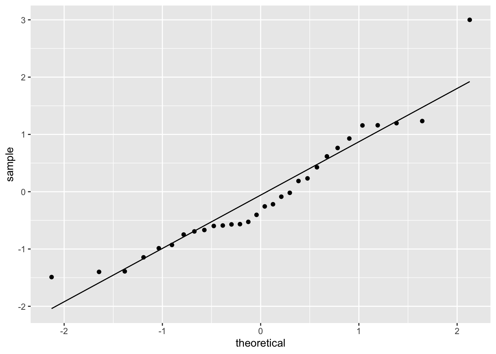
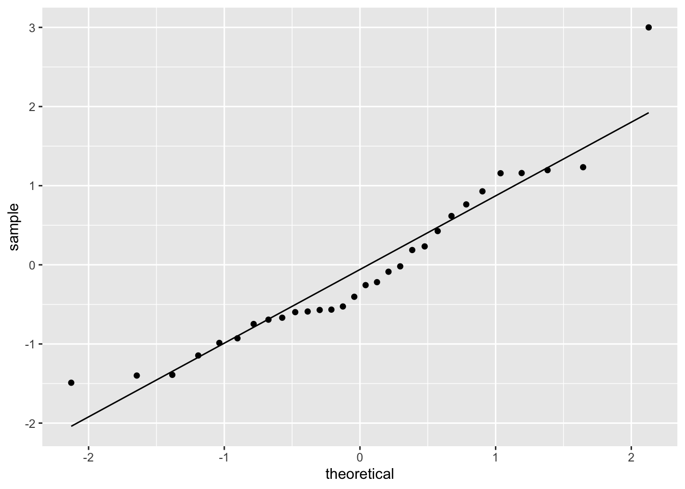
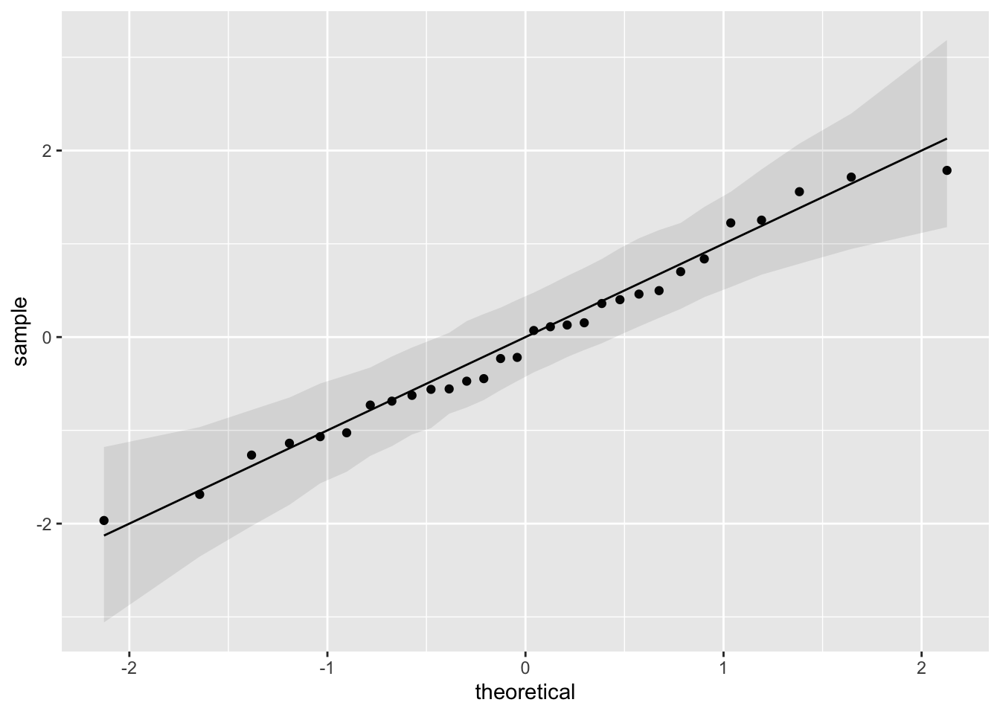

The p-value for SW test is: 0.033Ashlynn Lu
March 17, 2023
Data visualization plays a significant role in data analysis. It is a process of transforming large amounts of complex numerical data into more manageable visual representations, hence helping statisticians to discover and identify any unexpected pattern of data.
The objective when performing a formal hypothesis test is to propose and calculate a numerical test statistic and compare it to some critical value under the null hypothesis to make a binary decision, either to reject or fail to reject the null hypothesis. Similarly, the objective when creating a data visualisation is to describe the data and to make some decisions about it. Graphical procedures, such as the quantile–quantile (Q–Q) plot, are undoubtedly the most popular methods to identify the nature of the distribution of data.
An assessment of the normality of data is necessary for checking the validation of assumptions in various parametric statistical tests, including linear regression, t-tests, and analysis of variance. If this assumption is violated then the conclusion of these tests will be unreliable. There are two main methods of assessing normality: graphical and numerical. In this study, we mainly focus on the Q-Q plot for the graphical method, together with the Shapiro–Wilk test for the numerical test.
A Q-Q plot is a probability plot which compares if two probability distributions are close to each other by shape by plotting their quantiles against each other. If the two distribution is similar, the points on the plots are approximately allocated on the identity line \(y = x\). Q-Q plots are frequently utilized to compare a sample’s distribution to that of the standard normal distribution \(N(0,1)\). This is done by sorting the data and plotting them against specific quantiles of the standard normal distribution. Unlike numerical tests like the Shapiro–Wilk test which only indicates normality but without any feature of the distribution, properties of shapes of distribution such as heavy-tail, light-tail, and skewness are identifiable in Q-Q plots.
One well-known statistical tests for normality is the Shapiro–Wilk (SW) test. In the SW test, the null hypothesis is that the sample, \(x_1, \cdots , x_n\), was drawn from a population that follows a normal distribution. If the p-value of the test is below a specific significance level, such as \(\alpha = 0.05\), then there is enough evidence to reject the null hypothesis, indicating that the data does not follow a normal distribution. We are going to discuss the different configurations of the two tests.
However, the numerical test will sometimes give misleading results. Below shows a Q-Q plot using a sample with size \(n = 30\) of data generated from the standard normal distribution.

The p-value for SW test is: 0.033We can see that even though the data are generated from the standard normal distribution, the SW test suggests a rejection towards normality because of the tail behaviour. Therefore, the numerical tests should always be interpreted along with a graphical method, i.e. a Q-Q plot.
When we inspect a Q-Q plot, we say the data is similar to a normal distribution if the empirical and theoretical quantiles roughly coincide with the line denoting the theoretical distribution. Then the question is: how close the points and line should be considered as ‘lie on the line’?
Similar to how we may conclude a typical hypothesis test by assessing if the test statistic exceeds the corresponding critical value, we may consider adding a point-wise confidence interval here to assist the decision of normality by examining whether the data points lie within or exceed the interval bands. The construction of the confidence band is by repeated sampling. A 95% confidence band for the Q-Q plots represents a range of values that we may expect each quantile to be under the assumption of repeated sampling of the standard normal distribution. In this report, we are generating a large number of random samples (number of samples = 1000) of size equal to our data (n = 30) from the standard normal distribution, obtaining the 2.5% and the 97.5% quantiles for each point, and forming a confidence interval for each point estimate.

For this example, we may say that we fail to reject normality as all points fall inside of the bands.